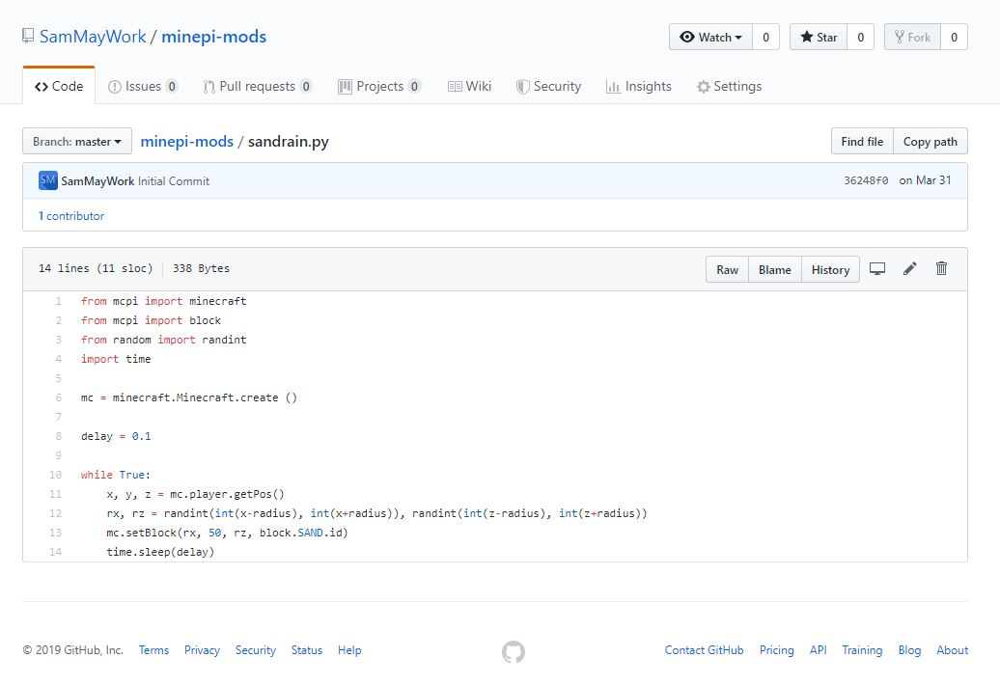

Mine-Pi Mods

During my Volunteering placement at Code Club I found the best way to inspire the pupils was to reinforce the link between the code they were writing and the effect on the screen. During my time volunteering I had aquired a Raspberry Pi which comes with a version of the popular game Minecraft with an exposed API for writing your own modifications.
Using this version of Minecraft I developed a series of simple modifications that allowed the students to directly see how values inside of code can change the effect of the program. To achieve this I had to make changes to the wau I write programs to more clearly show the values and logic structure that allow a program to function.
Initially I created 6 modifications for the game that were used to show the students the basics of programming along with the python language. I took measures as best as I could to make the code simple and readabwle, but during the session some students found some of the modifications difficult to understand so I have revised, updated, and simplified the code where possible
Project Creation Date - 2019/03/31
Last update - 2019/07/25